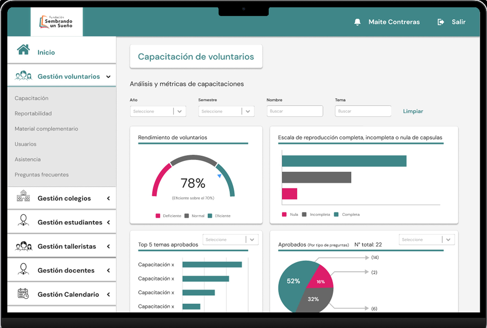

03
UX RESEARCH
UX/UI DESIGN
Intranet SUS
Intranet de gestión para
voluntariado, colegios y empleados
Plataforma interna diseñada para centralizar la coordinación de
voluntarios, colegios, programas y materiales, facilitando la gestión
diaria y la comunicación dentro de la fundación.
Ver prototipo en Figma


CONTEXTO
Proyecto desarrollado durante mi práctica profesional en Fundación Sembrando un Sueño.

ROL
Investigación inicial, arquitectura de información, diseño UX/UI y prototipado en Figma.

DURACIÓN
3 meses.

HERRAMIENTAS
Figma, Illustrator y Photoshop.
El problema
La fundación coordinaba voluntarios, colegios, materiales y actividades mediante herramientas dispersas como Drive y WhatsApp.
Esto dificultaba centralizar procesos, mantener trazabilidad y ordenar la comunicación interna.
Desafío de diseño

¿Cómo podríamos diseñar una intranet clara y funcional que reuniera la gestión de usuarios, programas, documentos y comunicación en una sola plataforma?
Proceso

Observar
Identificamos necesidades de coordinación, acceso a información y administración interna.


Ordenar
Definimos usuarios, módulos, jerarquías y flujos para estructurar la plataforma.

Diseñar
Tradujimos esa estructura en una intranet clara, modular y escalable en Figma.
Decisiones de diseño
Centralización
Unificamos tareas, materiales y comunicaciones en un solo ecosistema digital.

Gestión multiusuario
Consideramos distintos perfiles, permisos y necesidades dentro de la fundación.
Jerarquia
Priorizamos navegación clara, módulos diferenciados y lectura rápida de la información.
Solución final

IU simple y ordenada para iniciar sesión según el tipo de usuario
que necesite ingresar a la intranet.

Apartados completamente diseñados para las necesidades de los trabajadores de SUS.

Interfaz minimalista y explicativa para los estudiantes usuarios
de los programas de Sembrando un sueño.

Problemas como el reporte de cada sesión y la
comunicación, resuelta para los voluntarios.

Un apartado con la misma distribución que para otros perfiles,
pero compartiendo un lugar más simple y a las necesidades.

Se diseño un perfil para los encargados de la administración
del programa para el establecimiento.
Aprendizajes y próximos pasos
Aprendizajes clave
Diseñar sistemas internos exige ordenar primero la lógica antes de pensar en pantallas.
La claridad de navegación es esencial cuando existen múltiples perfiles y tareas.
Centralizar información mejora la coordinación y reduce la dependencia de herramientas externas.
Próximos pasos
Validar los flujos principales con usuarios reales de la fundación.
Profundizar en permisos, estados y trazabilidad de tareas.
Explorar una futura implementación junto a desarrollo.